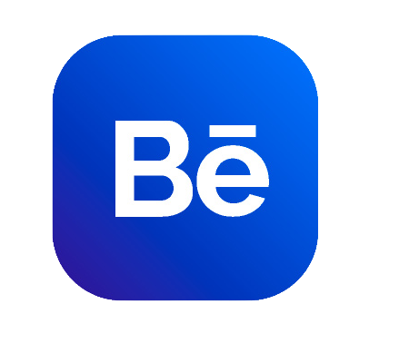

UX/UI
Proyecto: En bici
Trabajo final para la certificación Diseño UX/UI
Coderhouse 2021
Programas utilizados:


Un pantallazo rápido del proyecto y su evolución.

Análisis de las apps existentes con sus fortalezas y debilidades

Iteración: Después de hacer pruebas de usabilidad, encuestas, cardsorting

Ensayo y error : Wireframes

En síntesis...
Vuelvo a ver el proyecto después de un tiempo y cambiaría varias cosas, pero de eso se trata, no? De buscar mejorar el proyecto y aceptar que estará en constante cambio siempre.
Gracias por ver el proyecto, si te interesa ver más puedes entrar a 